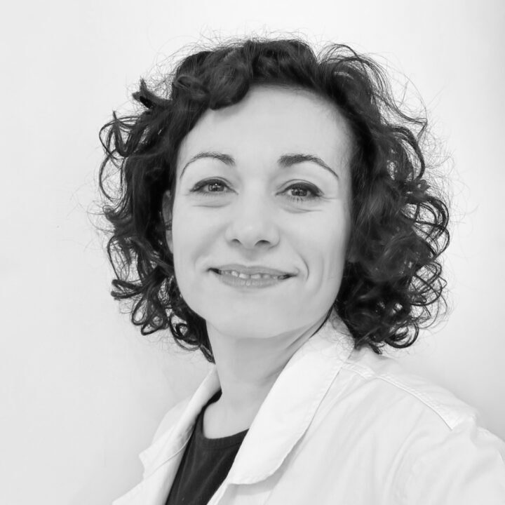
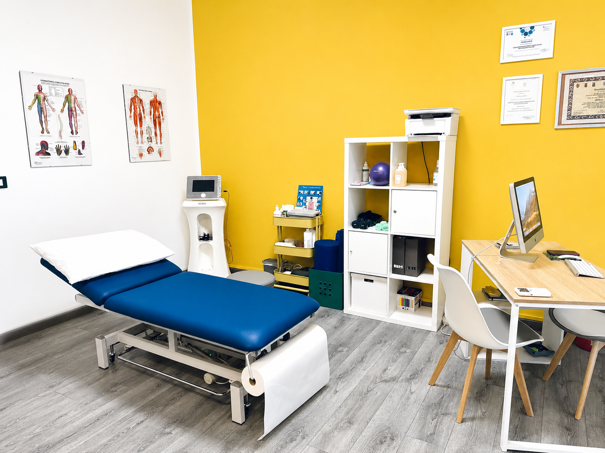

Trattamenti personalizzati per migliorare la mobilità, ridurre il dolore e aiutarti a recuperare al meglio le tue funzionalità.

Sono Fabiana Masia, qui la tua salute e il tuo benessere sono la mia priorità.
Sono una fisioterapista con esperienza nel trattamento di problematiche ortopediche e neurologiche, riabilitazione post-infortunio, Clinical Pilates e riabilitazione del pavimento pelvico.
Offro trattamenti personalizzati per migliorare la mobilità, ridurre il dolore e aiutarti a recuperare al meglio le tue funzionalità. Grazie alla mia formazione e all'esperienza maturata nel settore, offro un approccio professionale e attento alle esigenze di ogni persona.

Lo studio si trova nel centro di Livorno Ferraris, in Corso Leone Giordano 5, ed è attrezzato con strumentazione professionale per ortopedia, neurologia, Tecarterapia e riabilitazione del pavimento pelvico.
L'ambiente è luminoso, accogliente e curato in ogni dettaglio: un luogo in cui ti sentirai accolto fin dal primo incontro.
Dal primo colloquio alla fine del percorso, ogni terapia è costruita sulla persona — non sulla patologia. Metodologie basate sull'evidenza scientifica per garantire i migliori risultati.
Il Clinical Pilates non è semplice fitness: è uno strumento terapeutico per migliorare postura, equilibrio e controllo motorio, adatto a tutte le età e a tutti i livelli.
Le sedute si tengono in piccoli gruppi per garantire attenzione individuale, con un programma costruito sulle esigenze di ogni partecipante.
Informazioni sui corsiRinforzo dei muscoli stabilizzatori per una postura corretta e duratura.
Tecnica respiratoria per pavimento pelvico e diastasi addominale.
Percorsi specifici per gravidanza, post-parto, terza età e recupero.
Rieducazione del movimento per prevenire dolori cronici ricorrenti.
Non riesci a spostarti? Vengo io da te in tutta l'area di Livorno Ferraris e comuni limitrofi.
Articoli per capire la fisioterapia, prevenire i dolori e prenderti cura del tuo corpo.
Lo studio si trova nel centro di Livorno Ferraris, facilmente raggiungibile da Vercelli, Trino, Cigliano, Saluggia e dai comuni limitrofi.
Corso Leone Giordano 5
13046 Livorno Ferraris (VC)
Lunedì – Venerdì
Su appuntamento
Per informazioni o prenotazioni: rispondo personalmente a ogni messaggio entro 24 ore.